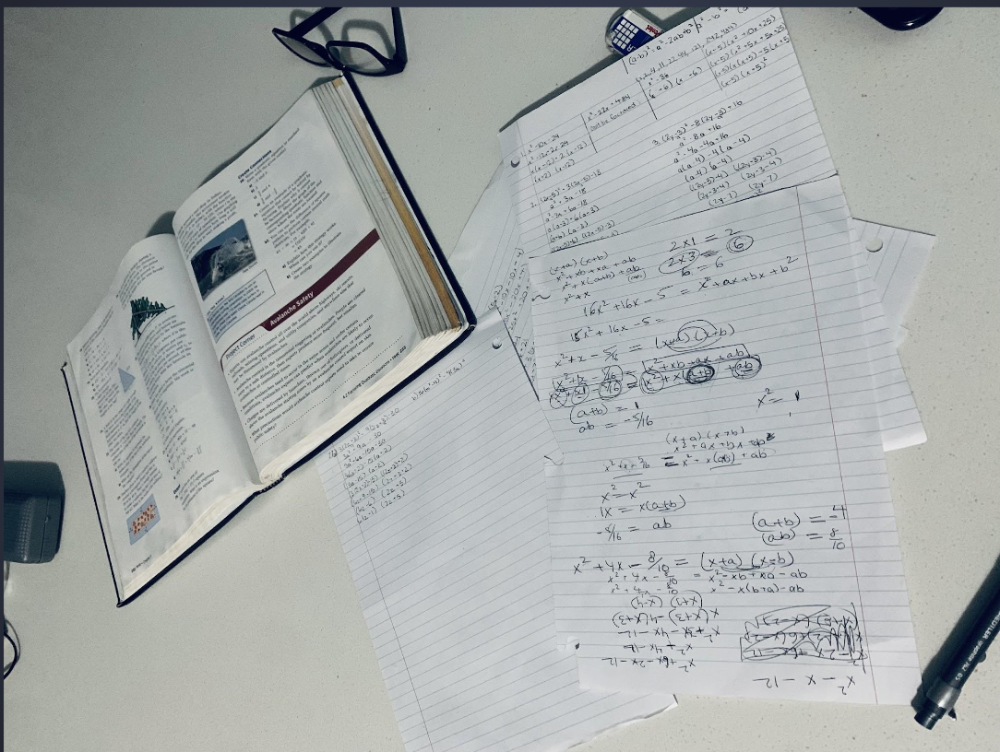
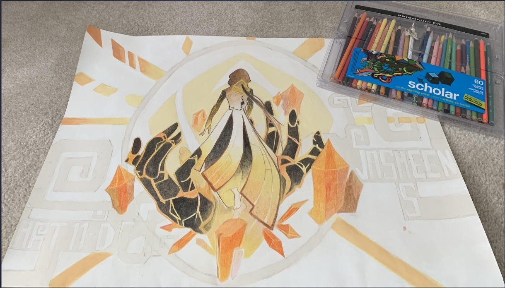
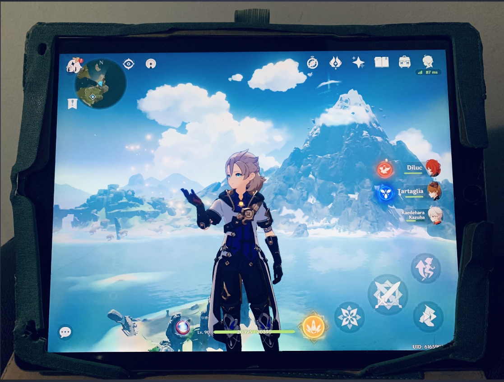
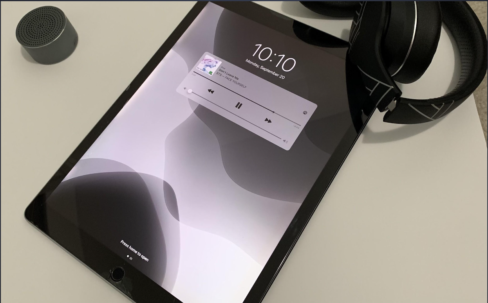
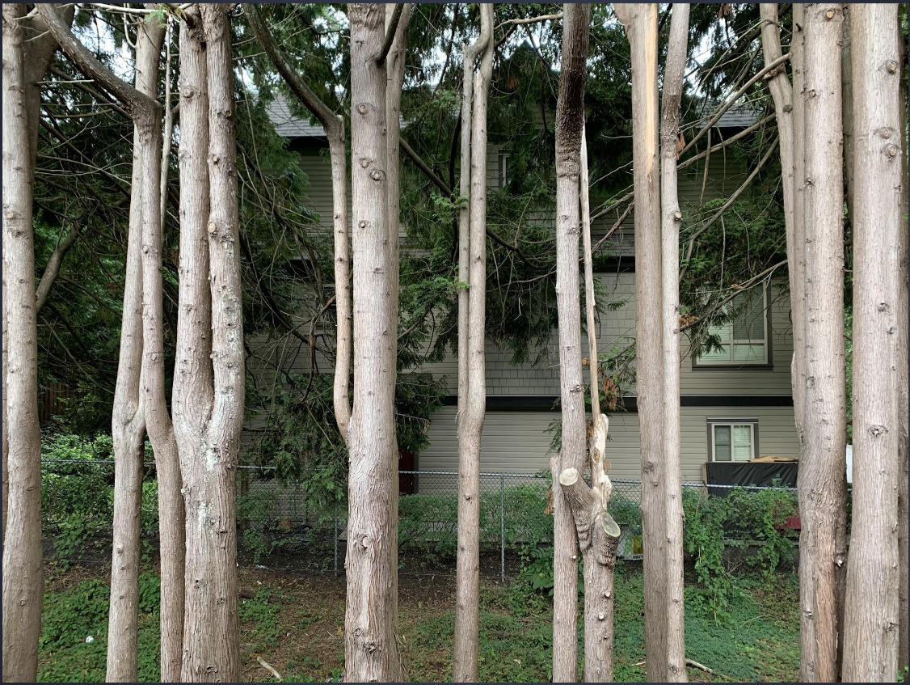

Expressing Gratitude!!
By: ME
- Life can be tough so you got to remember the things your grateful for. This blog post is about the things I am grateful for
- Thing 1
- Thing 2
- Thing 3
- Thing 4
- Thing 5

I am grateful for how much my parents help me when I struggle. As classes are going back to normal the work is becoming harder, so having my dad to teach me is a great thing as not many children are lucky enough to have someone at home to teach them. When I am able to get a question correct seeing my dads proud smile brighten ups my mood and makes me want to work harder.

When I am stressed or bored I enjoy doing art, whether that's drawing, painting or coloring. Time passes quickly as my pencil is on the paper and I realize just how much fun it is. I am only able to make art because of my hands which can create many beautiful artworks and the art supplies my parents bought to support my hobby. I am grateful that I have all I could need to create art and more.

The beautiful art of Genshin Impact is what first made me play the game but as time went on it became way more than just a game with pretty art to me. It allowed me to become more extroverted and talk to new people who also play. Most of my close friends from Winnipeg play this game and playing with them is exciting. I always log in to enjoy playing with them since they are far away from me now. It reminds me that even if we aren't close physically we can still connect through different ways. I am grateful for this game as well as the IPad which allows me to play it.

I am grateful for music and the artists which create music. The right music can make any day better or provide comfort when days are tough. Everytime a new song is released by my favourite artists I never miss a beat to listen to it and hope it’s worth adding to my playlists. Whether I am happy or sad, bored or working I will always be listening to music. Right now the song im playing on repeat is “Don’t Leave Me” by BTS.

My backyard has a beautiful line of trees that look almost unrealistic because of how they grew. Whenever I go outside I realise just how amazing nature is creating such pleasing scenery, that not only looks good but provides us with life. Going outside can immediately make anyone better. I am grateful for the beauty and security of nature.